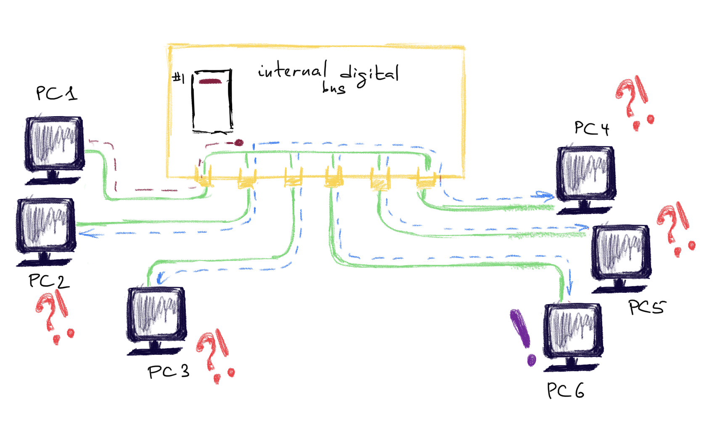
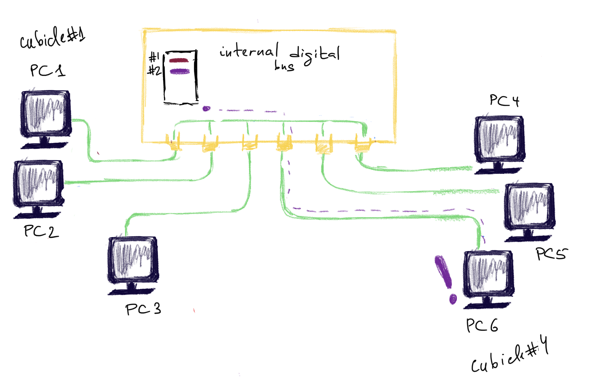
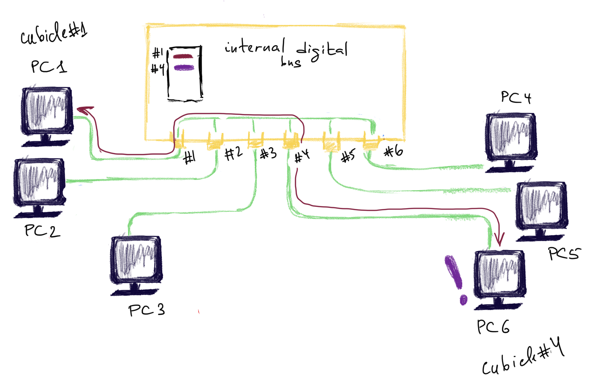
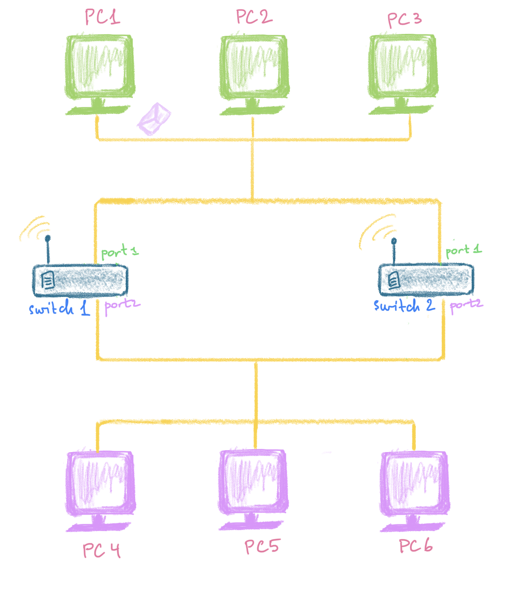
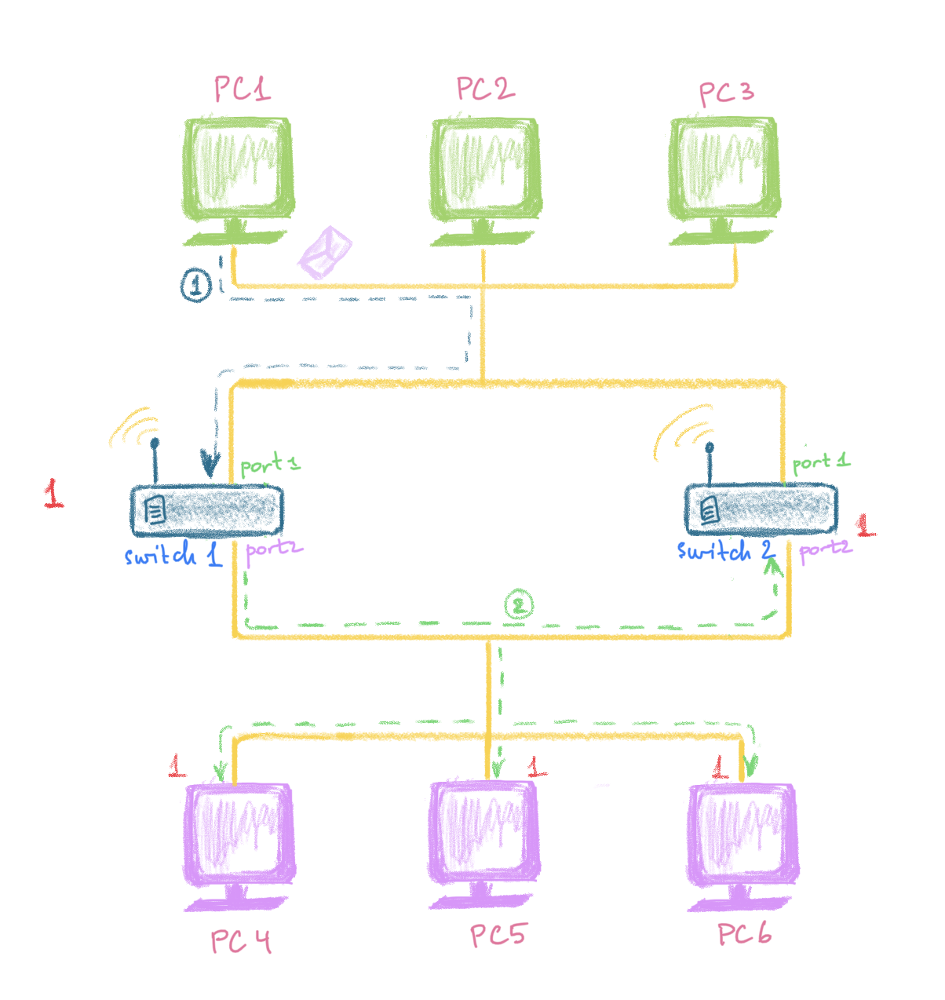
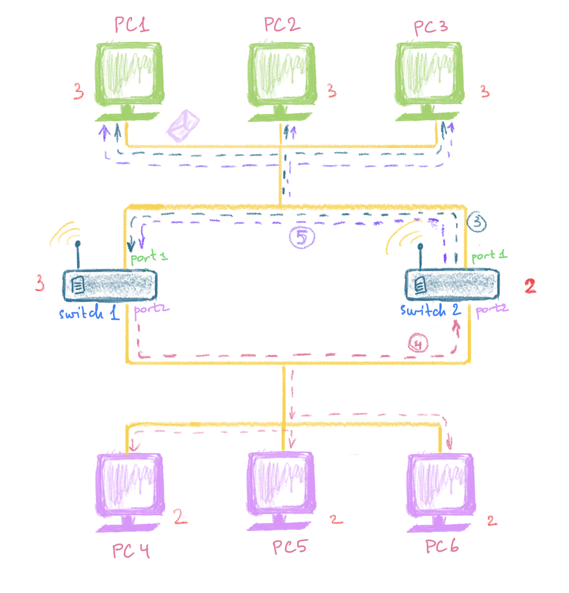

This is a protocol of TCP/IP suite, Data Link Layer. The first layer after physical layer is a data link layer and the protocol in use here is Ethernet II. Other protocols of this layer (not TCP/IP): . Network devices, protocols and attacks of the Data Link layer use a frame as a unit of information. The devices of this layer know nothing about IP addresses or TCP/UDP ports. They wouldn’t know what to do with them since the protocols’ headers only contain MAC addresses. MAC addresses is all they know and care about.
Each device in the network is recognized and identified by two basic pieces of information: IP address, MAC address. The service that is talking from that particular machine is recognized by TCP/UDP port and Application data (at the top of the OSI model).
VLAN
VLANs (broadcast domains) provide a way to separate LANs on the same switch. VLANs don’t share broadcasts.
Routing tables
There are two different types of routes: local routes (directly connected to a switch or router) and those that use the default gateway. If a message is being sent to a computer that is identified in the computer’s routing table, direct type of connection would be established. A gateway forwards messages coming from, or going to, external networks. Routing tables are maintained by all devices that are network connected (switches, routers, PCs, laptops etc). When Address Resolution Protocol (ARP) needs to send a message to a location that is outside its broadcast domain, it sends the message to the MAC address of the default gateway.
netstat -nr # Mac or Windows
ip route show # router
tracepath
traceroute
tracert
Four causes of troubles
- Collisions
- Signal reflection
- Electrical noise
- Hard Malfunctions
Collisions
There are two types of collisions: early and late.
Devices
Hubs and Repeaters
These are the devices of physical layer, but I’m mentioning them here because it might be confusing. Well, at least, I’ve found it to be confusing. They don’t read anything actually, their sole purpose is to send the data forward. Each device is connected to some port of a hub or repeater. When there is some data arriving to a hub, it’s sent over to all connected hosts. It’s like broadcasting. However, if the packet was not for your MAC, the PC’s network card will reject it. Unless you have a sniffing library and tool to actually see them. That why if the hacker is connected to a hub, repeater ot COAX cable they will see all the traffic. Which is not the case with a switch.
The computers (nodes) connect to the hub using Unshielded Twisted Pair cable (UTP).
COAX Cable
A cable has two terminating resistors (50 Ohm) so that the data is not reflected back. 1 segment of such a cable can be at most 185 meters and have 30 PCs connected to it.
Switch
Unlike a hub, a switch diffirentiates between the packets and forwards the packets according to the MACs specified in the frame. They keep track of MACs and corresponding switch ports in a MAC filtering table (can hold upto 8000 MAC addresses) once they learn these MACs. Use ASIC’s (Application Specific Integrated Curcuits). They are faster than routers, cause they don’t analyse IP layer => 1 thing less to do, 1 second faster 😸. So they work at wire speed.
Steps:
- Learn the addresses
- Forward and filter decisions
- Loop avoidance
Step 1 Address Learning
When the switch is new in the district and doesn’t know anyone yet, it looks pretty much the same as an ordinary hub (see here). But unlike a hub this switch has a notebook 📓 (empty yet) and a pen 🖊 . It’s called the MAC filtering table. The switch 🧑💼is sitting still until someone comes up with a request. It’s sitting in a big building with lots of cubicles (very long time ago that was what it looked like when someone wanted to make a call to another city). For the switch 🧑💼all these cubicles are assigned a number.
For example, PC1 🖥 with MAC address aa:aa:aa:aa:aa:aa comes by and asks to send a frame to PC6 🖥 with MAC bb:bb:bb:bb:bb:bb. The switch doesn’t know who is who yet. He says:
- Hey, PC1 🖥 with MAC address aa:aa:aa:aa:aa:aa. Nice to meet you. I will write your MAC in my notebook 📓 and you go and wait in the cubicle number 1. I’ll let you know the response as soon as I get it.
- OK, - says PC1 🖥 and enters a cubicle 1.
The switch now puts 1 in front of PC1’s MAC address. Now, the job of the switch 🧑💼is to find PC6 with MAC bb:bb:bb:bb:bb:bb and assign a cubicle to it as well.
How can it achieve that?
The first option is to to ask every machine in the neighbourhood until it finally finds its fellow, using, for example, something like ARP protocol but for Data Link layer. But this would take O(n) time for n machines. The more machines are in the district, the more time is needed to asks everyone. The worst case is when the machine needed is the last asked (that’s why O(n)).
The second option is the one actually being used. The switch 🧑💼sends this frame from PC1 to every machine in the neighbourhood (yes, it’s a violation of confidentiality…). It’s called broadcasting. Whoever responds - is PC6.

The switch 🧑💼now puts down its MAC (bb:bb:bb:bb:bb:bb) and assigns it to the cubilcle #4 .

PC6 🖥 goes to the cubicle 4, reads the frame from PC1 and sends a response. Now the switch checks against his doodle (which indicate that PC1 is in the cubicle 1) and delievers the response to the cubicle 1 where PC1 is still waiting 🖥 (and not picking up his nose ❓).

From now on all frames between PC1 and PC6 will be forwarded without prior flooding and violating the confidentiality.

Step 2 Forwarding and Filtering
The destination is known, forward to the correct port. If the destination is not known yet, find out and assing a port to that address.
Step 3 Loop avoidance (optional)
For redundant switches (additional switches to provide redundancy in case one fails). STP (spanning tree protocol provides protection for such cases). STP finds redundant links and shuts them down.
Broadcast storm.
First, what’s a MAC? MAC - it’s an identifier of the machine on the network. It’s specified in a frame (a message one PC sends to another) for the network devices managing the delivery of these messages to know, where to send this message and for the receiver to know this is meant for him. While IPs (upper layers of OSI) can be shared among several devices, MACs can not.
Secondly, what’s a broadcast? It means “Tell everyone”. To specify that this message is destined for everyone, a machine puts MAC address FF:FF:FF:FF:FF:FF (it was agreed by the techies community) in the frame header. When a network device (router, switch, bridge etc) receives a frame with this precise MAC address, it knows it should forward it to everyone connected to this network. When a PC’s NIC (network card) gets such a frame, it reads it as if it were sent to its own MAC. So, PC’s NIC will read only frames with its own MAC and with FF:FF:FF:FF:FF:FF (if it’s not running in the promiscuous mode).
If you only have one switch 👨🎨, it may go ill 🤧 and stop working. The whole network will then go down. It’s not a desired behaviour and needs to be though of. So, we add a second switch to the network 👨🍳 . Sounds great? Well, it is if your switch supports STP, but what happens if it doesn’t?
Let’s assume the following infrastructure:

There are two cables. One connecting PC1 💻 ,2💻 and 3💻, another - PC4 🖥 ,5🖥 and 6🖥. All of these PC’s are in the same LAN (they know each other pretty well and receive the same broadcast messages) and the cables are connected with two switches: the switch #1 👨🎨 and the switch #2 👨🍳 . Both switches have their first ports connected to the upper cable (#1) with the green PCs 1,2,3 and their second ports to the lower cable (#2) with the purple PCs 4,5,6.
For some reason, PC1 💻 decides to send a broadcast “Hey, guys! Check out this beautiful spam letter!” (see the blue arrow #1 in the picture below):

So, what happens next? Where is the problem with this?
This message reaches the first port of the switch #1 👨🎨. The switch #1 👨🎨 forwards this message to all purple PC’s. This messages runs happily along the wire, being delievered to the PCs of the second cable and also to the second port of the switch #2 👨🍳. Observe the green dashed arrow #2 on the picture below. By now, the switch #1 👨🎨 , the switch #2 👨🍳 and each of the pink PCs have received this message only once (see the red counter in front of each on the picture below). So, each of the PCs on the network (except, of course, PC1 who sent this spam and obviuosly finds it interesting) is facepalming 🤦♀ for the first time.
The switch #2 👨🍳 is very responsible and forwards this message back to the realm of the green PCs (where this message has originally been sent from). Now, this ridiculous message is sent along the wire #1 and reaches PC1 (which has sent it), PC2 and PC3 and also the first port of the brother-switch #1 👨🎨. This is what the blue dashed arrow #3 shows on the picture below. It’s just started smelling very bad 👃 … .

The switch #1 👨🎨 re-sends this broadcast to the purple PCs connected to its port #2. The switch #2 👨🍳 receives it as well (see the pink dashed arrow #4 on the picture above) and re-sends it to its first port. From the first port it is then sent to the green PCs 1,2,3 and the first port of the switch #1 👨🎨 . This is what the arrow #5 shows on the picture above. By now, the switch #1 and each of the green PCs has received this message three times, the switch #2 and each of the purple PCs has received this stupid message twice.
Now, re-read paragraphs 1 and 2, the re-read again and again and again… 😄. This goes on and on infinitely…. Each time the switch #1 👨🎨 receives this broadcast, it re-sends it to the purple PCs and the switch #2 👨🍳. Everytime the switch #2 👨🍳, in turn, receives this message, it re-sends it to the green PCs and the switch #1 👨🎨. Facepalming is not that funny anymore and all the digital guys start feeling uncomfortable and scared 😱. The both switches at the same time are 🤷♂ 🤷♂ and keep doing somethin suspicious. The worst thing is that the switches are so busy doing something weird and useless, that they don’t have time to actually do the serious and important stuff 🏤 .
That’s what’s called a broadcast storm. In the real world dwelled with people, once someone receives the message twice, he or she usually says “I’ve already heard that”. This saves him or her from further bothering. That’s why STP (Spanning Tree Protocol) was invented for for network devices.
Types of the switches
Store & Forward
The most popular mode and the one which has the highest latency. In this mode the whole frame is stored in a buffer and checked for errors before forwarding. Because of this additional work, the latency gets higher.
According to firewall.cx, this table represents min RAM needed for this mode on the switch not to cause you troubles:
| NUMBER OF PORTS | MINIMUM RAM | PREFERRED RAM |
|---|---|---|
| 5 | 256 Kb | 512 Kb |
| 8 | 512 Kb | 1-2 Mb |
| 16 | 2 Mb | 4-6 Mb |
| 24 | 4 Mb | 6-8 Mb |
Cut-through
Second popular option. Only reads the frame until the destination MAC is detected. Doesn’t check for errors.
Fragment free
Reads the first 64 bytes only (min frame size). The reason for this is because almost all collisions will happen within the first 64 bytes of a frame. Not very popular.
Problems with switches:
Network loops (resolved with spanning tree protocols), might not improve traffic with broad- and multicast. Cannot connect geographically dispersed networks.
Bridge
Bridges are pretty much the same, but have a few differences:
- Bridges are software based, while switches are hardware based because they use an ASICs chip to help them make filtering decisions ❓
- Bridges can only have one spanning-tree instance per bridge, while switches can have many ❓
- Bridges can only have upto 16 ports, while a switch can have hundreds. Why? ❓
Promiscous mode
NIC (network card) can operate in this mode and process all packets that it recieves. The packet’s destination is determined by MAC address, however, I’m putting this here for reference.
ARP Protocol
This is not a protocol of a data link layer of TCP/IP stack. It’s not on any layer per se. However, I’m putting this paragraph here because ARP is needed for filling in Ethernet header details.
Attacks
Sniffing
What’s sniffing?
CAM (Content Addressable Memory) - switch keeps a record of all MACs of connected devices and their assigned virtual ports on that switch in a table:
| MAC | Switch port |
|---|---|
1111:1111:0000:2222 |
12 |
Flooding with 1 MAC. Send lots of ARP reply to constantly update 1 entry (race condition). Whenever the MAC in CAM table is substututed with the attacker’s MAC, the responses will be redirected to the attacker. As soon as the victim sends a new request to some server through the switch, its MAC overwrites the attacker’s. So it looks like a battle for 1 “seat”.
Flooding with different random MACs. Turning switch into a hub by flooding it with lots of ARP reply sending lots of random addresses and overflowing the CAM table. Uncapable of coping with such a flood, the switch is turned into a hub.
# flood with random MACs
macof -i eth1 -n10
# targeted flooding
macof -i eth1 -d 192.168.1.1
Span port. This is an option that can be turned on in the switch’s configs. Each request and response is copies and sent to the span port as well. Sometimes, switches only allow listening on the span port.
CISCO config example
monitor session 1 source interface fastethernet 0/1
- source port for monitoring
monitor session 1 destination interface fastethernet 0/24
- destination port
ARP poisoning. This attack poisons an ARP cache of a target machine. If attacker succeeds in overwriting an ARP entry for the default gateway with its own MAC, all traffic will be redirectied to the attacker.
ARP cache is not the same as CAM table.
# flood Bob (192.168.1.4) with ARP replies stating that the attacker has 192.168.1.1
arpspoof -i eth0 -t 192.168.1.4 192.168.1.1
# ARP cache of 192.168.1.4 is now as follows: cc:cc:cc:cc:cc:cc = 192.168.1.1.
# flood the GW i.e. gateway (192.168.1.1) with ARP replies stating that the attacker has 192.168.1.4
arpspoof -i eth0 -t 192.168.1.1 192.168.1.4
# ARP cache of 192.168.1.1 is now as follows: cc:cc:cc:cc:cc:cc = 192.168.1.4.
MAC spoofing. Change the attacker’s original MAC to the victim’s locally. For example, in the registry on a Windows machine:
HKEY_LOCAL_MACHINE\SYSTEM\CurrentControlSet\Control\Class\4d36e972-e325-11ce-bfc1-08002be103d8 SMAC
Or in the command line (Linux):
# disconnect from wlan1
ifconfig wlan1 down
# or
ip link set wlan1 down
# * optionally
# find MAC for specific vendor
macchanger -l
# change mac for wlan1
macchanger -r wlan1
macchanger -m aa:bb:cc:dd:ee:ff
# connect to wlan1 with the new MAC
ifconfig wlan1 up
# or
ip link set wlan1 up
IRDR spoofing. Send spoofed ICMP Router Discover Protocol advertising GW (gateway) to start routing through for victims.
STP-mangling
❓❓❓❓
Attacker is elected as the new root bridge of the spanning tree:
- forge BPDUs (Bridge Protocol Data Unit) with high priority assuming to be the new root
- Broadcast STP Config/Topolgy Change ACK BPDUs to get his host elected as the new root bridge.
Being the bridge root Eve can intercept all traffic.
How to detect - http://www.firewall.cx/general-topics-reviews/network-protocol-analyzers/1113-capsa-network-analyzer-discover-arp-attacks-flooding.html
References
Firewall.cx
[1] About switches and bridges - http://www.firewall.cx/networking-topics/general-networking/236-switches-bridges.html